New This Sweep
High Street, East Budleigh (Grade II cottage)
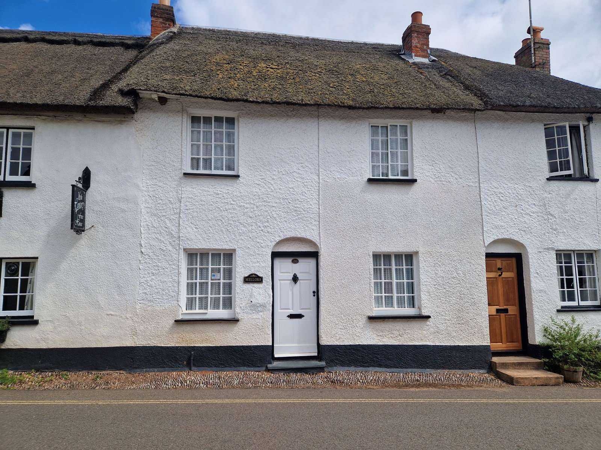
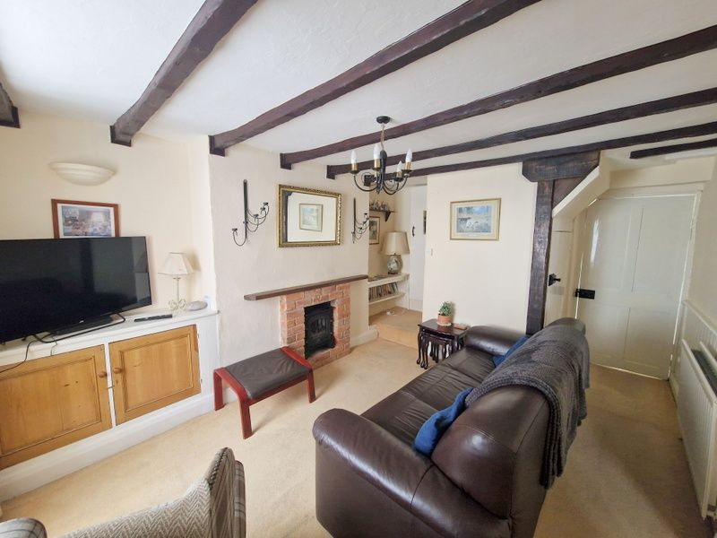
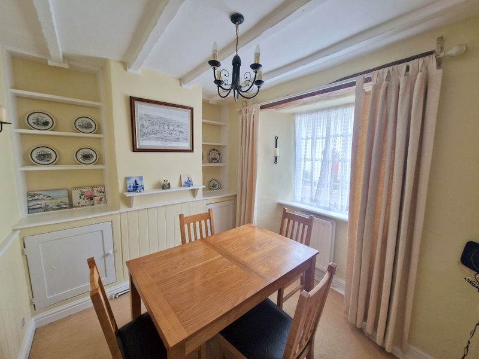
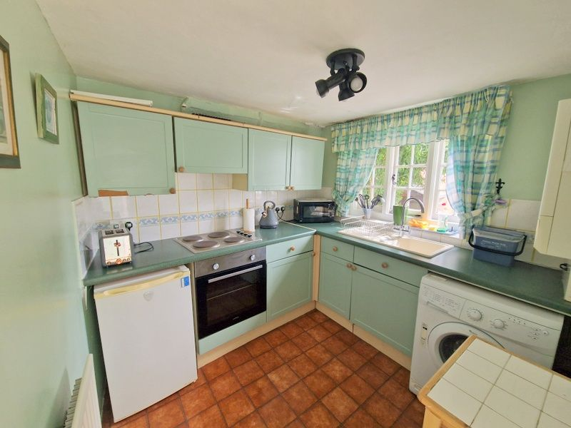
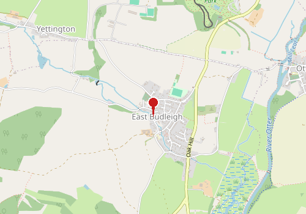
Double-fronted Grade II listed cottage on the High Street in East Budleigh village. Living room with fireplace, separate dining room, good-sized kitchen, two first-floor double bedrooms, spacious bathroom, cloakroom, feature ceiling beams throughout, enclosed rear garden, gas central heating.
Why it's here: Not to be confused with the £435,000 East Budleigh thatched cottage already on file below (likely sold/withdrawn) — this is a separate, much cheaper Grade II cottage in the same village, well under budget with genuine period features (beams, fireplace). East Budleigh itself is inland of Budleigh Salterton by about 2 miles, still within easy reach of the coast. No parking mentioned in the listing, so treat as absent rather than just unconfirmed — worth checking if the High Street has resident permits.
Source: pennys.net — listing 263959
Family notes
No family notes yet.
Opens a GitHub issue (free account needed) — Claude reads it and adds it here during the next daily sweep, not instantly.The Marles, Exmouth (ground-floor flat)
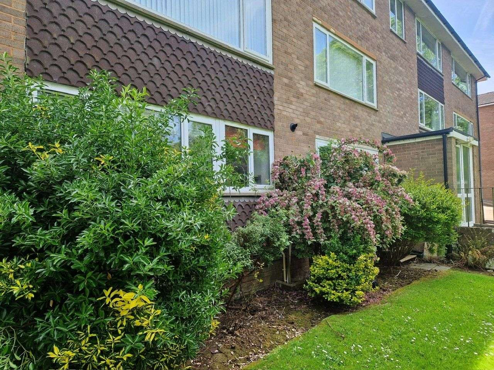

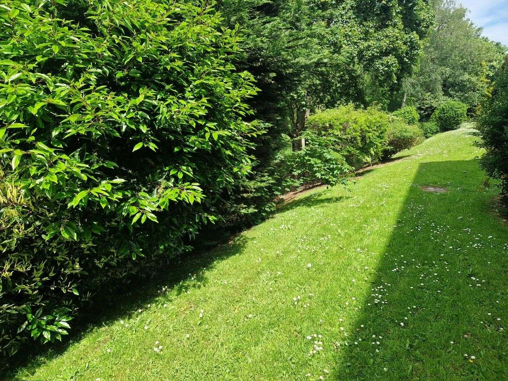
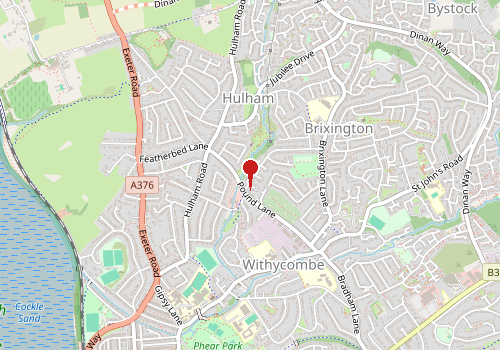
Spacious purpose-built ground-floor flat undergoing extensive modernisation — new flooring, refurbished kitchen and shower room, full redecoration. Entrance hall with utilities cupboard, large lounge/diner, two double bedrooms, shower room/WC, surrounded by communal gardens. Leasehold with an extended lease granted on completion. Service charge £1,440/year.
Why it's here: Passes the ground-floor test for a flat and is well under budget, but the parking is soft: the listing only says a garage is understood to be available to rent close by, not an allocated space that comes with the sale — weaker than Exeter Road or Douglas Avenue below, which both have confirmed allocated parking.
Source: pennys.net — listing 269531
Family notes
No family notes yet.
Opens a GitHub issue (free account needed) — Claude reads it and adds it here during the next daily sweep, not instantly.Still Listed
Farleys, The Strand, Lympstone (Grade II cottage)
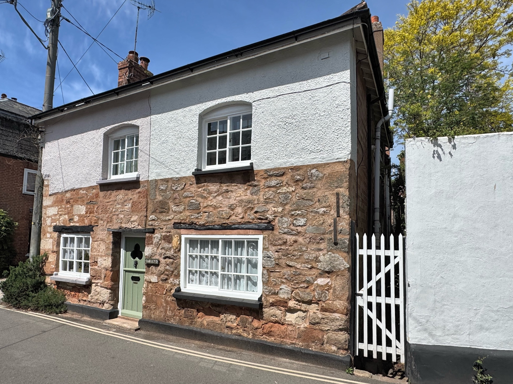
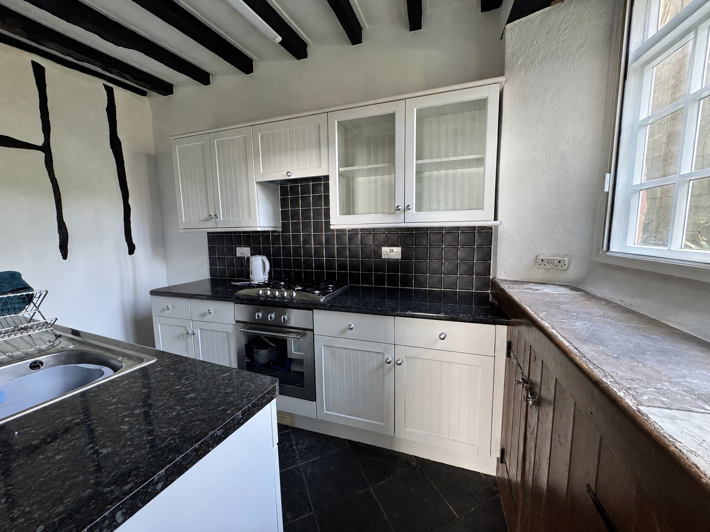

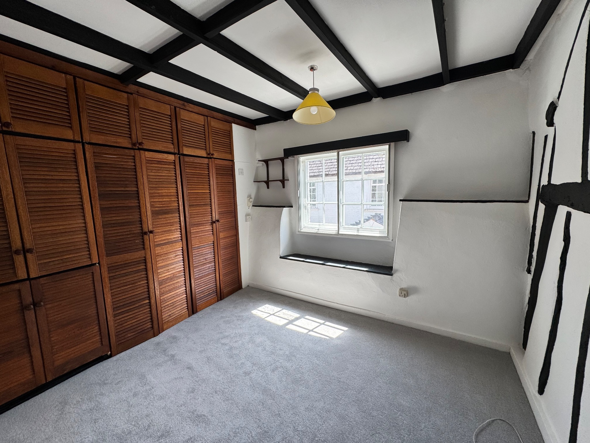
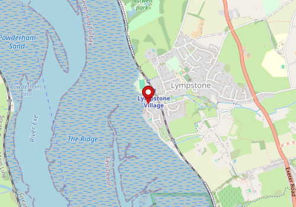
Two-bedroom Grade II listed cottage in the heart of Lympstone village — exposed beams and stonework throughout, cosy sitting/dining room, well-appointed kitchen, family bathroom, two loft areas with Velux windows, gas central heating. Freehold and chain-free. No garden and no dedicated parking — permit parking is available at the village car park nearby. Two pubs, shop, post office, café, sailing club and the estuary all on the doorstep.
Why it's here: Location-wise this is arguably the best-placed find yet: Lympstone sits on the Exe estuary directly between Exmouth and Woodbury Common — water one way, trails the other, and one of your brothers is in Woodbury just up the hill. Genuine period character (Grade II, beams, stonework), chain-free, and £5k under ceiling. The catches: no parking (the standing hard requirement — waived here only because it's genuinely characterful, with village car park permits as the workaround), no outdoor space, and listed-building consent applies to any alterations. Found via the Exmouth Journal property pages, not the portals.
Source: hallandscott.co.uk — HSEXM_706793
Family notes
No family notes yet.
Opens a GitHub issue (free account needed) — Claude reads it and adds it here during the next daily sweep, not instantly.Exeter Road, Exmouth (ground-floor character flat)
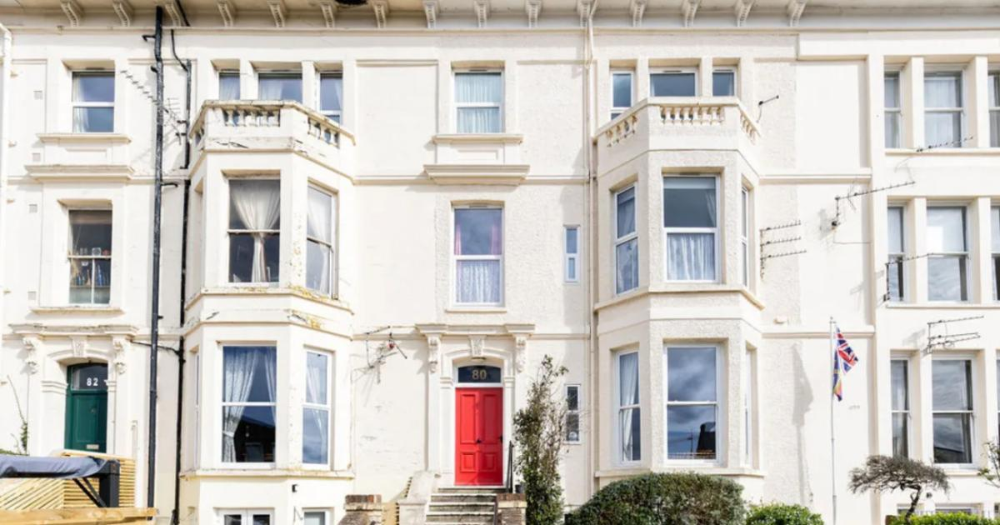
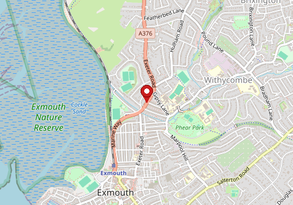
One-bedroom apartment occupying the entire ground floor of a period building on Exeter Road — high ceilings, large windows overlooking the communal lawn and neighbouring church, generously proportioned living room, bedroom with double doors onto a rear courtyard, modern bathroom, galley kitchen. Allocated parking at the rear. Functional condition with scope for modernisation. 52 years remaining on the lease.
Why it's here: Still the rare flat that actually passes your flat rules: genuinely cheap AND explicitly the whole ground floor, with a real allocated parking space on top. Reduced a further £20,000 on 24/06/2026, now just £110k — under half of what it was quoted at when first tracked. Worth a sense check on the short (52-year) lease and extension cost before getting excited about the price. Only one photo shown — Zoopla blocks photo scraping, so this is the single press image from the Exmouth Journal writeup.
Source: zoopla.co.uk — listing 72842267
Family notes
No family notes yet.
Opens a GitHub issue (free account needed) — Claude reads it and adds it here during the next daily sweep, not instantly.3 Bell Street, Otterton


Two-bedroom terraced cottage: sitting room, kitchen/breakfast room, ground-floor shower room, two first-floor bedrooms with a bathroom, enclosed rear garden with raised beds and a timber store. Roof renewed 2023 but the rest would benefit from general refurbishment. Freehold, Council Tax Band C, no onward chain.
Why it's here: Cheapest confirmed in-budget option this sweep, and it's in the same village as the Otterton thatched cottage you already liked. But it's even more squarely the thing you flagged a reservation about there: village-centre, on-street parking only, not the remote/rural feel you said you'd prefer. Worth it only if the price and no-chain status outweigh that.
Source: pennys.net — listing 270110
Family notes
No family notes yet.
Opens a GitHub issue (free account needed) — Claude reads it and adds it here during the next daily sweep, not instantly.The Flexton, Ottery St Mary
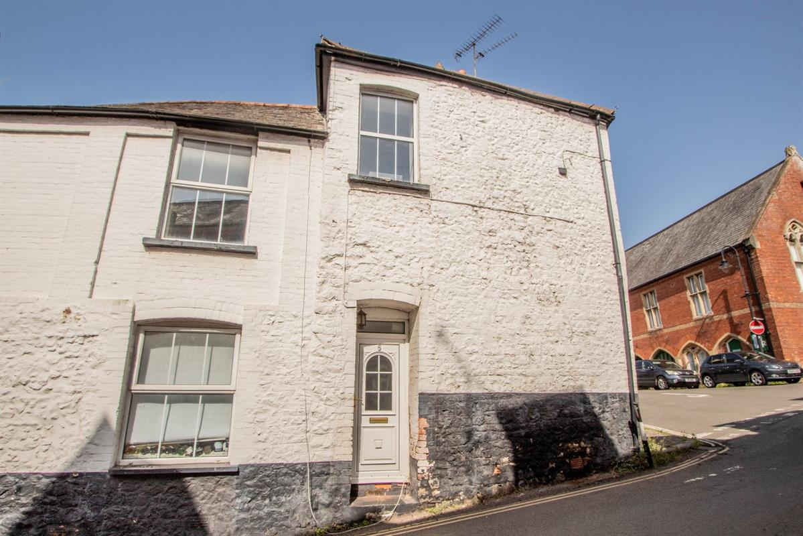
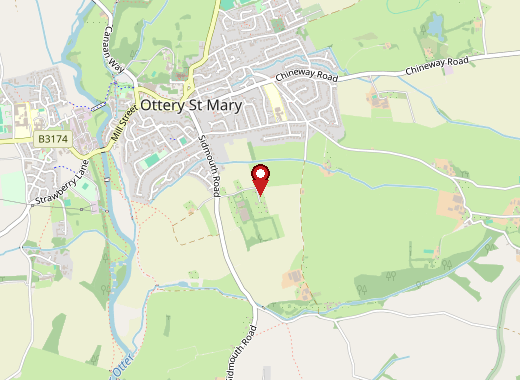
Deceptively spacious period cottage over three floors: ground-floor kitchen/dining room and a living room built around an open brick fireplace, bathroom with both bath and shower, three bedrooms upstairs (two doubles, one single). Private courtyard with gravel landscaping and pedestrian rear access. Near town-centre amenities, schools, and commuter links (A30, M5, London rail).
Why it's here: Same price as the Bell Street cottage above but reads as more finished and genuinely characterful — an open brick fireplace and three floors of period detail rather than a fixer-upper. The trade-off: Ottery St Mary is inland, away from both the coast and Woodbury Common, and the courtyard access described sounds pedestrian-only, so parking is probably absent.
Source: hallandscott.co.uk — HSOTT_708139
Family notes
No family notes yet.
Opens a GitHub issue (free account needed) — Claude reads it and adds it here during the next daily sweep, not instantly.The Beacon, Exmouth (ground-floor flat)
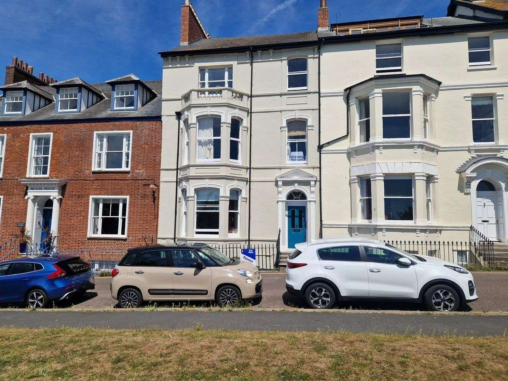
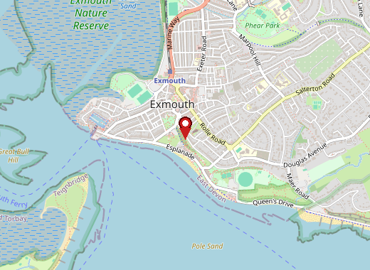
Two-double-bedroom ground-floor flat, a quarter-share of the freehold on a 999-year lease in a self-managed building of four apartments (£120/month maintenance). Bay-window sitting room overlooking the estuary, modern kitchen, bathroom with rainfall shower plus a separate cloakroom, stone fireplace. A secure parking space (up-and-over door) is included at the rear.
Why it's here: Note: this is a different property from the over-budget Beacon house already on file below — same building name, unrelated listing. This one is genuinely ground-floor with a real allocated parking space (not just street parking) plus an estuary view, which is unusual for a flat at this price. But it's £9,950 (3%) over your £300k ceiling and it's a flat, so only worth a look if you'd flex the ceiling slightly for a genuine parking bay and the view.
Source: pennys.net — listing 270212
Family notes
No family notes yet.
Opens a GitHub issue (free account needed) — Claude reads it and adds it here during the next daily sweep, not instantly.Cranford Avenue, Exmouth (ground-floor flat)
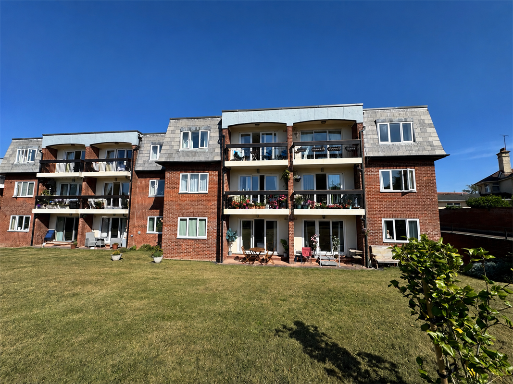
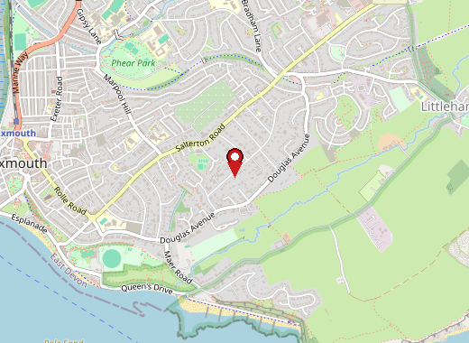
Two-double-bedroom ground-floor apartment in the Avenues area of Exmouth, beautifully modernised throughout, sold with no onward chain and ready to move into.
Why it's here: A safely-in-budget, ready-to-go fallback flat if nothing more characterful turns up — similar in spirit to the Douglas Avenue flat already on file, but £15,000 cheaper. No parking mentioned in the listing, so treat as unconfirmed rather than absent (Douglas Avenue has confirmed allocated parking).
Source: hallandscott.co.uk — HSEXM_708054
Family notes
No family notes yet.
Opens a GitHub issue (free account needed) — Claude reads it and adds it here during the next daily sweep, not instantly.Thatched Cottage, The Green, Otterton
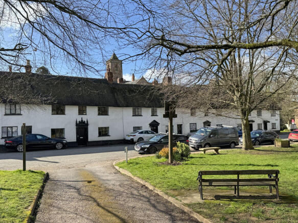
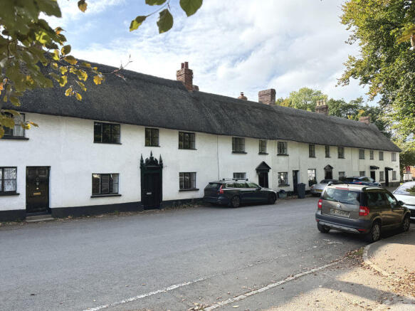
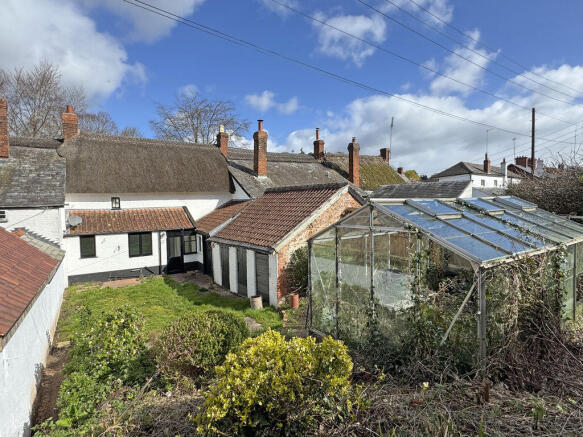
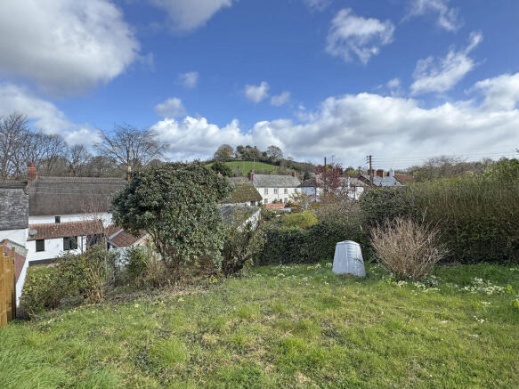
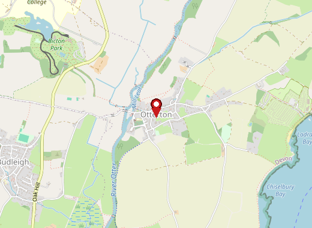
Attractive three-bedroom thatched cottage right in the centre of Otterton village, close to the River Otter and Otterton Mill. South-facing rear garden, period stone fireplace and window seat. Needs modernising throughout — priced accordingly.
Why it's here: Jesse flagged this one personally — near his brother, a lovely part of Devon. His one reservation: it's village-centre (on-street parking only) and he'd prefer something a bit more remote/rural. Worth weighing character + location against the more remote feel he's after. See 3 Bell Street above — a cheaper fixer-upper in the same village if this one's too finished/pricey.
Source: rightmove.co.uk/properties/174232565
Family notes
No family notes yet.
Opens a GitHub issue (free account needed) — Claude reads it and adds it here during the next daily sweep, not instantly.Barn at Whites Cottages, Feniton — AUCTION

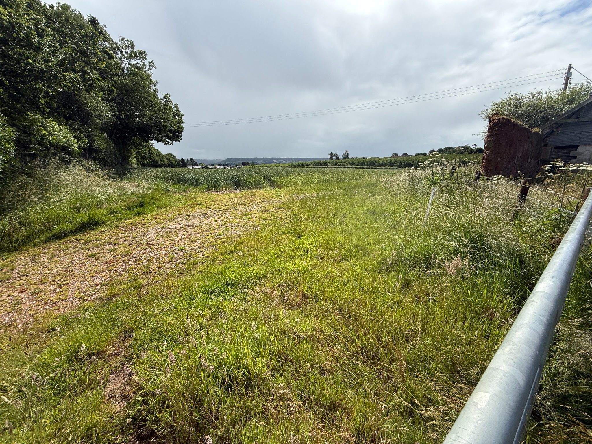
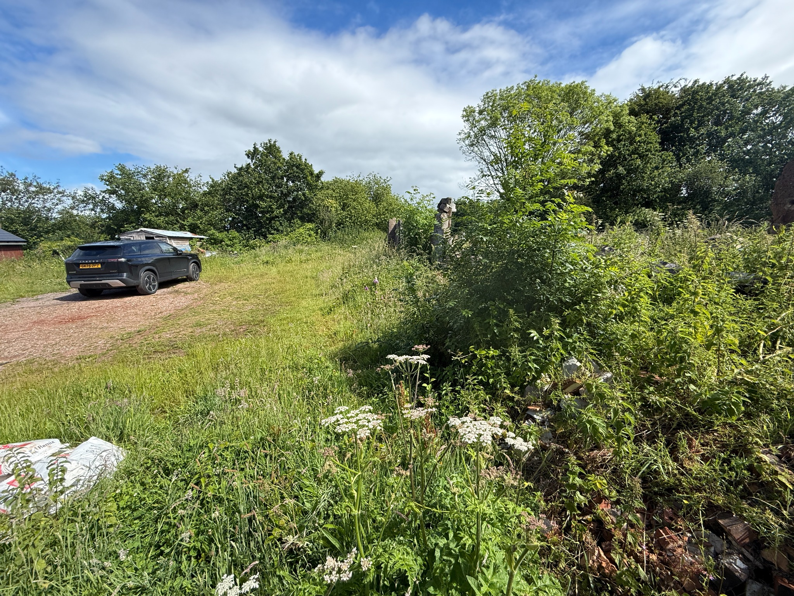
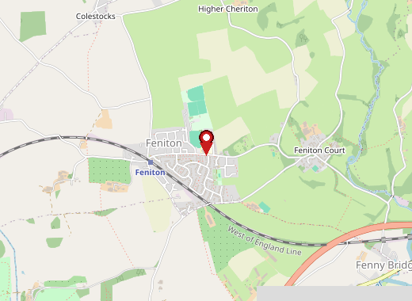
Freehold barn on a 0.21-acre plot on the edge of Feniton village. Already has full planning permission (East Devon DC ref 25/0370/FUL, granted Sept 2025) to convert and extend into a 3-bedroom dwelling with parking and garden. Going to online auction 23 July 2026.
Why it's here: The self-build/conversion-plot opportunity Jesse said he'd consider — cheap land with permission already in hand. Downside: inland near Honiton, off the coast/trails brief.
Source: hallandscott.co.uk — HSOTT_708623
Family notes
No family notes yet.
Opens a GitHub issue (free account needed) — Claude reads it and adds it here during the next daily sweep, not instantly.Douglas Avenue, Exmouth
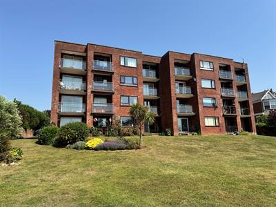
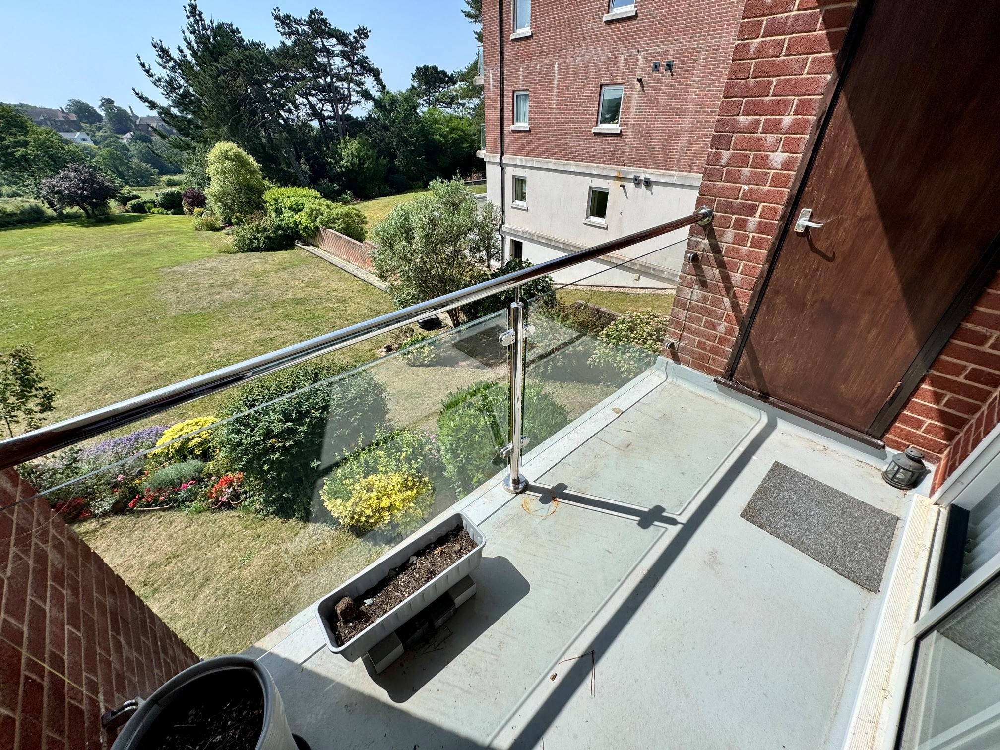
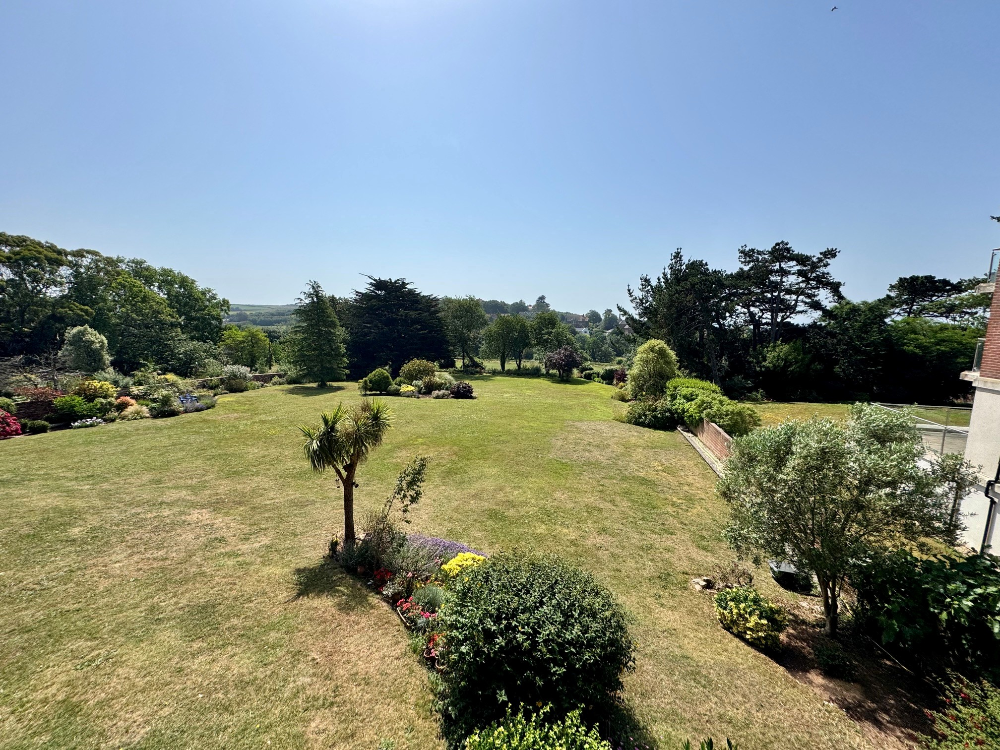
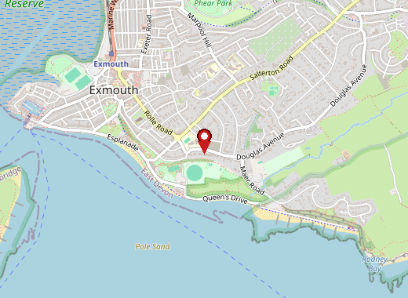
Two-bed purpose-built apartment, balcony, allocated parking, near seafront/town centre, between town and the sea.
Why it's here: Conventional but solid fallback if nothing more characterful turns up in budget. It's a flat, floor level unconfirmed.
Source: hallandscott.co.uk — HSEXM_697185
Family notes
No family notes yet.
Opens a GitHub issue (free account needed) — Claude reads it and adds it here during the next daily sweep, not instantly.Also On File (background)
Circular Thatched Cliff-top Cottage, Peak Hill Road, Sidmouth
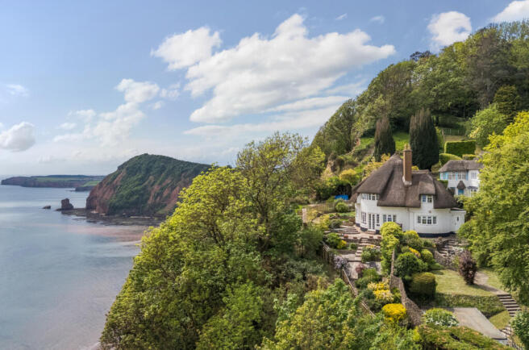
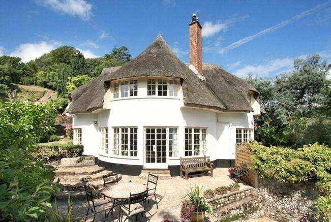
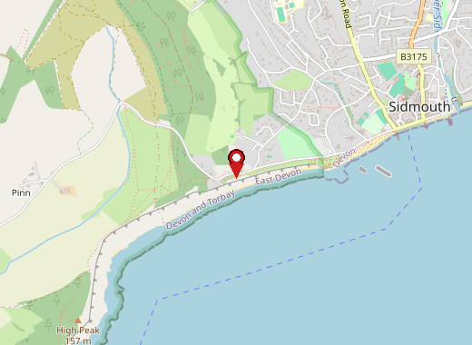
A unique circular thatched house on a cliff-top position along the Jurassic Coast, designed in the 1960s for novelist R.F. Delderfield. Panoramic sea views over Ladram Bay, mature terraced gardens. Auction closes 21 July 2026 — just over two weeks out.
Why it's here: Was Jesse's stated dream home, dropped 2026-07-06 once the erosion risk was actually looked into. Local press confirms the garden has already lost ground to a cliff fall, not just theoretical risk, and that stretch of Peak Hill has a well-documented run of landslips. Separately, standard UK buildings insurance excludes coastal erosion outright, there's no government backstop for it like there is for flooding, and lenders increasingly treat erosion-risk properties as unmortgageable — the only public money available is a £6,000 demolition grant if it's ever condemned, nothing toward lost value. That combination is why the guide price is so low, and why Jesse walked away. Kept here for the record rather than deleted.
Source: rightmove.co.uk/properties/90027936
Research findings
Asked: What do the papers/local chatter say about the cliff collapse and why this house is going so cheap, before dismissing it entirely? (2026-07-06)
The cottage lost part of its garden to a confirmed cliff fall in 2024 and now sits roughly 40ft (12m) from the edge of a 120m drop. The coastline here (Sidmouth Mudstone Formation, capped with Cretaceous Greensand at Peak Hill) is soft and fails unpredictably rather than eroding gradually — there's been a steady run of rockfalls along this stretch, including a large one in October 2024 and another as recently as late June 2026, serious enough that East Devon council has closed several nearby cliff-top paths as a precaution. A full cliff survey exists in the auction legal pack. All the press coverage traces back to the same wire story (Sidmouth Herald/Midweek Herald/Exmouth Journal all ran it) — none of it quotes an engineer, the council, or a neighbour on the specific risk, and no Facebook/community-forum chatter about this particular house turned up; it doesn't appear to be a locally-discussed listing. On whether stabilising the cliff (Jesse's caisson idea) is even feasible: no Peak-Hill-specific policy was found, but this is open, undeveloped cliff west of the harbour — the kind of coastline Shoreline Management Plans typically mark 'no active intervention', meaning little chance of public money or planning support for private hard defences. That's an inference from how these plans usually treat isolated clifftop properties, not a confirmed answer for this plot — worth a direct call to East Devon's coastal protection team before spending anything on engineering feasibility.
Sources: Sidmouth Herald — cliff fall coverage · Sidmouth Herald — auction/legal pack details · Sidmouth Herald — recent rockfall/council closures
Family notes
No family notes yet.
Opens a GitHub issue (free account needed) — Claude reads it and adds it here during the next daily sweep, not instantly.The Threshing Barn, Yettington
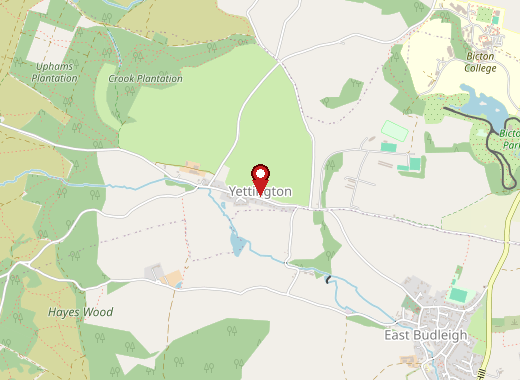
Two-bedroom barn conversion in the small hamlet of Yettington, directly on the walking/cycling routes linking Budleigh Salterton, East Budleigh, and Woodbury Common. Stable-style front door, vaulted ceilings, exposed beams, ~798 sq ft, gardens and allocated parking.
Why it's here: About as close as a converted barn gets to the Woodbury Common trail network. Priced 25-33% over budget and compact for the money. Downgraded to likely sold this sweep: on top of the agent's own listing page redirecting to a generic search, a Rightmove mirror for a similar 3-bed Yettington barn conversion now also returns 410 Gone. Kept only as a benchmark/inspiration piece unless Jesse wants it chased further.
Source: exmouthjournal.co.uk (background coverage — agent's listing page no longer resolves)
Family notes
No family notes yet.
Opens a GitHub issue (free account needed) — Claude reads it and adds it here during the next daily sweep, not instantly.The Beacon, Exmouth (inspiration only)
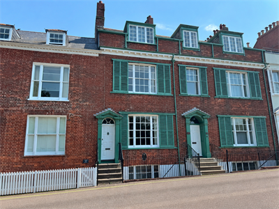
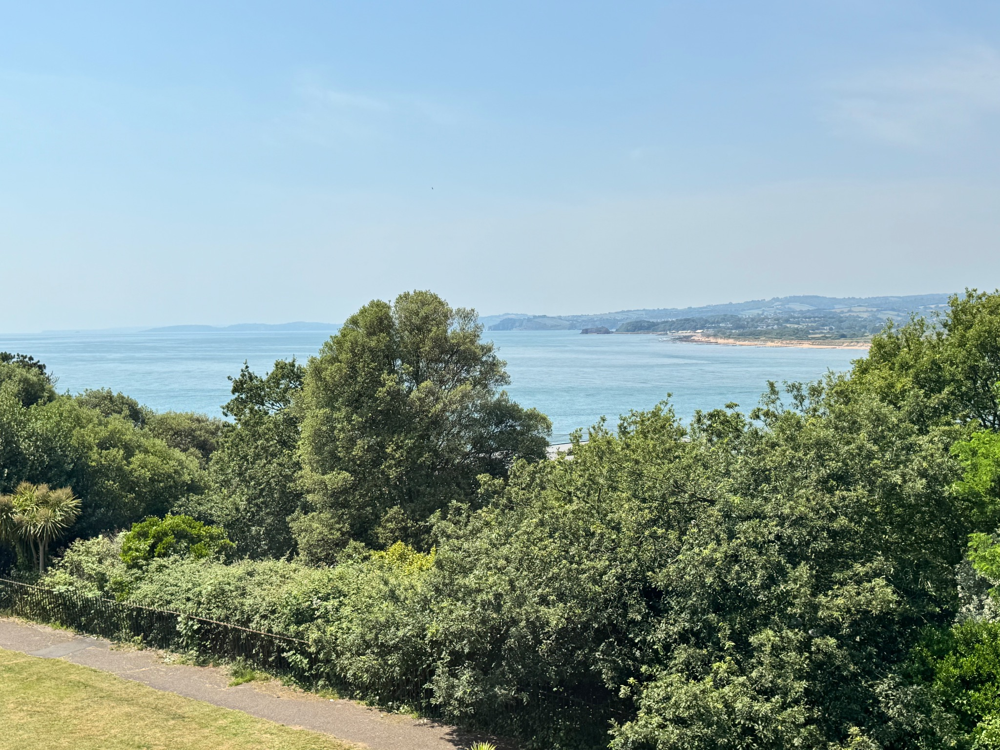
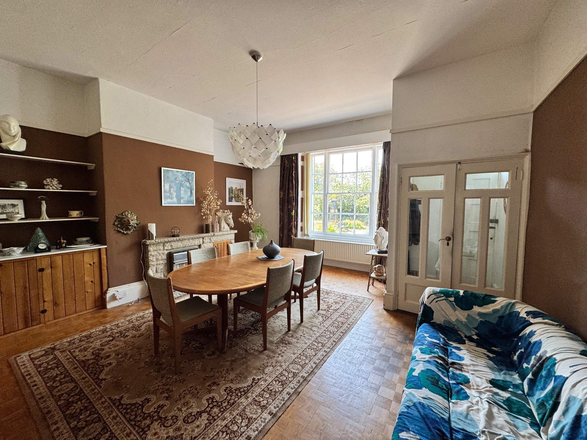
Grade II-listed four-storey house needing renovation, sea views from the upper floors, private garden and garage, walking distance to town centre and seafront.
Why it's here: Well over budget but kept as a benchmark for what full-renovation character stock costs locally.
Source: hallandscott.co.uk — HSEXM_707936
Family notes
No family notes yet.
Opens a GitHub issue (free account needed) — Claude reads it and adds it here during the next daily sweep, not instantly.Withycombe Village Road, Exmouth (former Methodist Church)
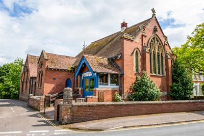
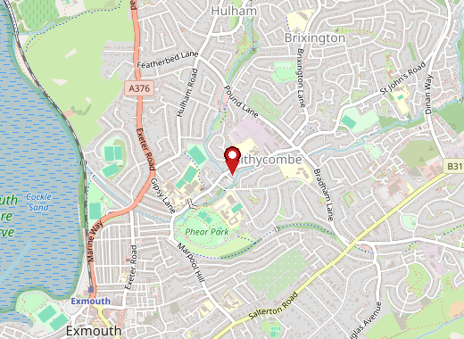
Former Methodist Church and adjoining Church Hall, gardens, conversion project subject to planning consent.
Why it's here: Couldn't re-locate this exact listing this sweep — may have sold or been withdrawn. Kept as inspiration for the flavour of conversion opportunity this market does throw up.
Source: hallandscott.co.uk/sales/ (specific listing not relocated)
Family notes
No family notes yet.
Opens a GitHub issue (free account needed) — Claude reads it and adds it here during the next daily sweep, not instantly.Salterton Road, Exmouth (ground-floor retirement flat)
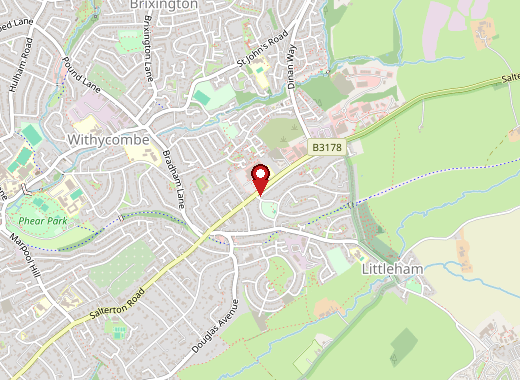
Two-bedroom ground-floor retirement apartment, direct access to communal gardens, close to amenities and bus routes. Likely age-restricted.
Why it's here: Cheapest option found originally; could not reconfirm this exact flat this sweep (a different Salterton Road retirement flat, Bronte Court, now shows instead). No photo included to avoid misattributing an image to the wrong flat.
Source: hallandscott.co.uk/sales/ (specific listing not relocated)
Family notes
No family notes yet.
Opens a GitHub issue (free account needed) — Claude reads it and adds it here during the next daily sweep, not instantly.Grade II Thatched Cottage, High Street, East Budleigh
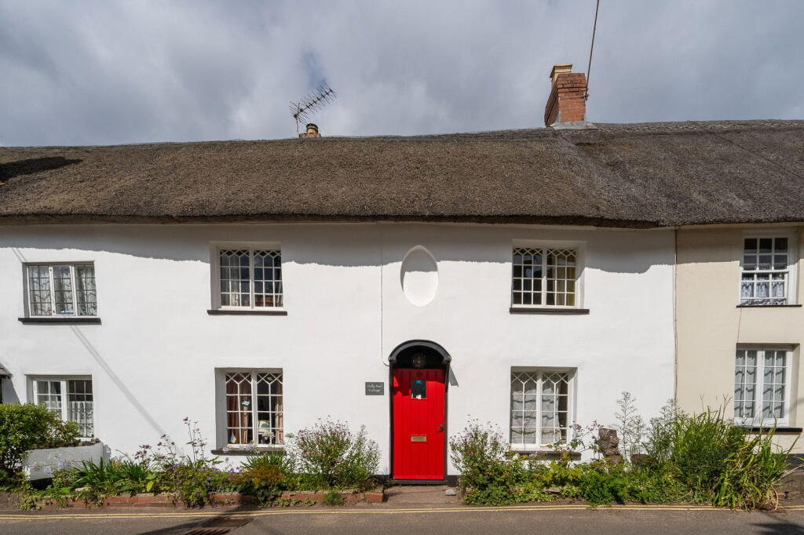
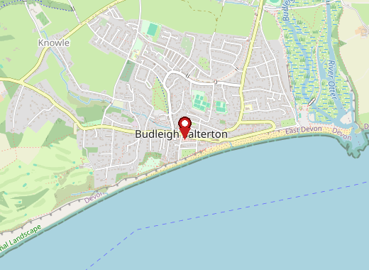
Genuinely characterful double-fronted thatched cottage, 1600s core with a 1700s rear extension.
Why it's here: 45% over budget, kept as inspiration. The Rightmove listing now returns "410 Gone", suggesting it has sold or been withdrawn.
Source: rightmove.co.uk/properties/165338390 (page now returns 410 Gone)
Family notes
No family notes yet.
Opens a GitHub issue (free account needed) — Claude reads it and adds it here during the next daily sweep, not instantly.Clinton Garage, Budleigh Salterton — AUCTION

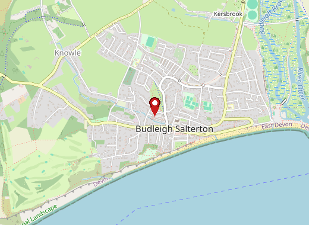
Former commercial garage/MOT site right in Budleigh Salterton itself — conversion/redevelopment long-shot.
Why it's here: Over budget and speculative, but flagged given the town-centre location and imminent auction date.
Source: meadowsea.com — MEAD1265
Family notes
No family notes yet.
Opens a GitHub issue (free account needed) — Claude reads it and adds it here during the next daily sweep, not instantly.The Coach House, Leslie Road, Exmouth
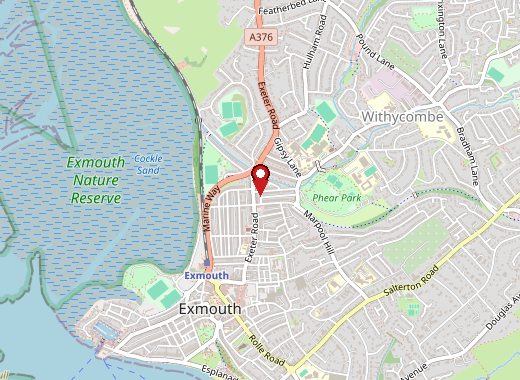
Freehold, no parking mentioned — originally sent over by Jesse rather than found by search.
Why it's here: Could not reconfirm this exact listing this sweep; a different, pricier Leslie Road property now shows instead. Worth a direct call: 01395 264111.
Source: pennys.net/property-search (specific listing not relocated)
Family notes
No family notes yet.
Opens a GitHub issue (free account needed) — Claude reads it and adds it here during the next daily sweep, not instantly.